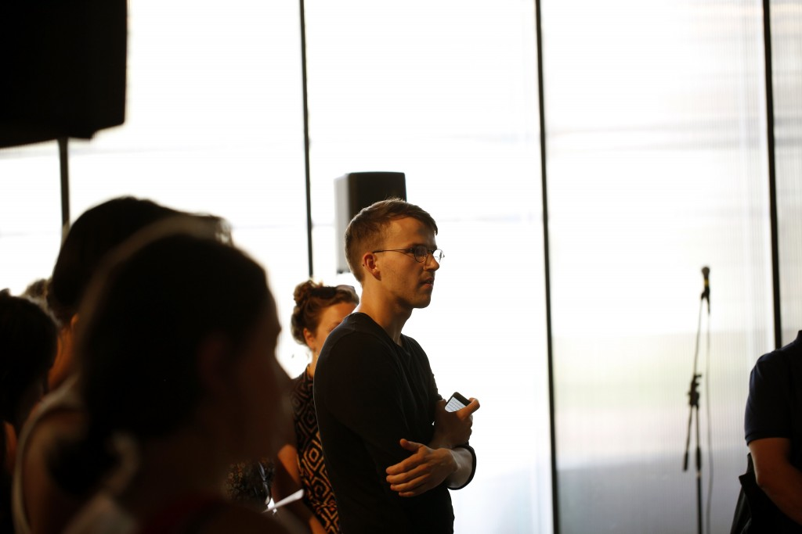
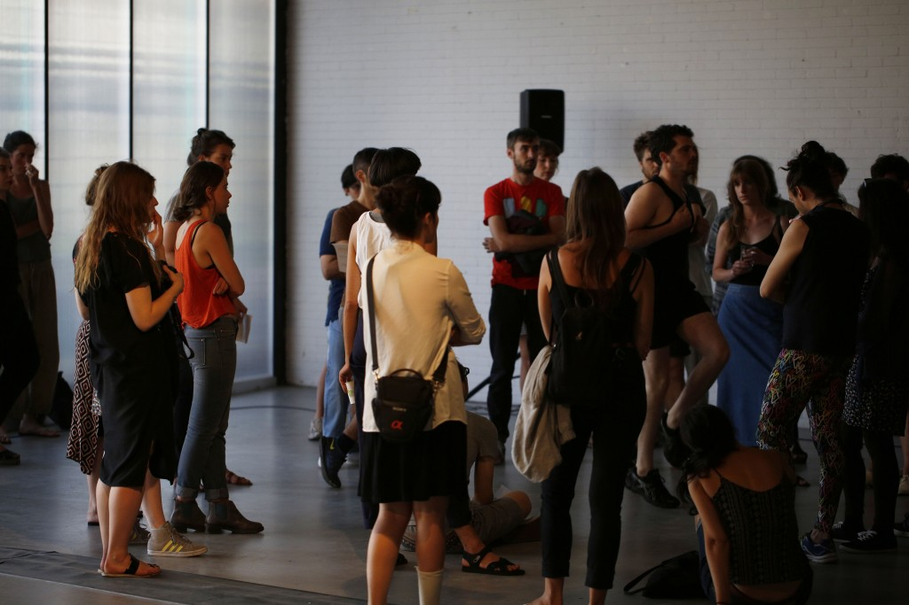
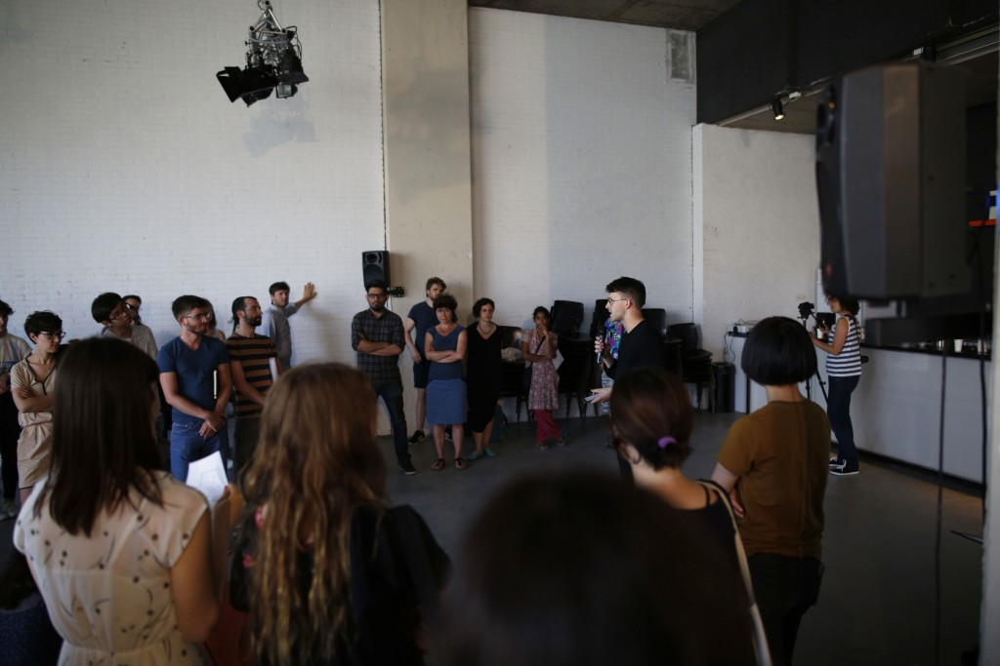
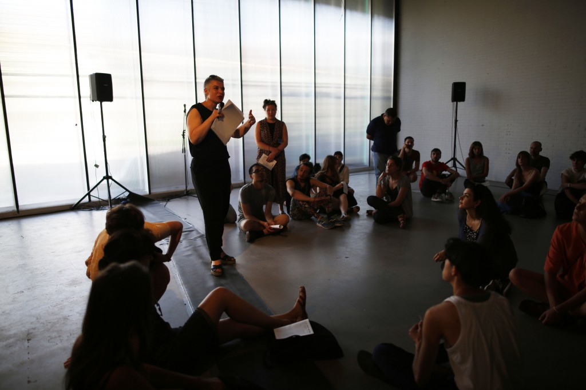

To complete my time at the DAI, I colaborated with Alex Jeoronymides-norie to make Running a cruise control, a sound work, a poem and a performance.
The video will soon be available, until then there are some images below.
The Blurb from the catalogue:
The Garden Thrives by Jam city is a severe and grating beat, with interludes of soft and easy funk. It will start the presentation, and then be interrupted by a sound work based on running. This will then be elaborated on and mused on by poet Alex Jeronymides-Norie. After which I'll present the research over the last year that has led up to this presentation; relating to, artificial intelligence, prometheanism, consumer sport science.
The for Do the right thing
During a three day \'marathon\' 22 graduating DAI-students will all present a 20 minute final lecture-performance. Other than the constraints of the framework of time and space there are no restrictions to the content of the presentation. Following each performance, in a conversational mode, (invited)respondents reflect on the presentation while simultaneously engaging with a well considered key question, brought forward by each presenter at the beginning of her presentation.
  